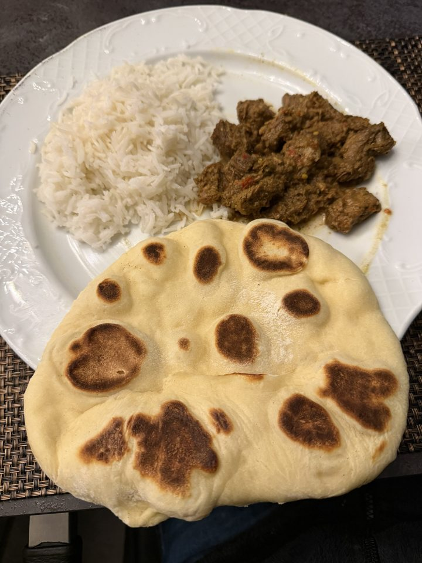

Goa · säuerlich-scharfes Schmorgericht · Marinieren über Nacht, Schmoren ca. 2–2,5 Std.

Dazu
Naan und Reis
Naan mit Joghurt backen, dazu Basmati (mit einem Kardamom und einer Prise Kurkuma im Kochwasser).
Vorbereiten
Am Vortag schmoren
Vindaloo gewinnt am zweiten Tag deutlich: schmoren, kalt stellen, am nächsten Tag langsam aufwärmen (bei Bedarf einen Schuss Wasser).